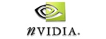

|
|
 |
Hyatt Regency Bethesda,
Washington DC |
Title Sponsors: 
Additional Supporters:
NARKii.com
Walt Disney Corporation
Photos from the conference can be found here (many thanks to Mauricio Vives of Autodesk for taking all of these photos.)
Awards
The awards presented at the conference are listed below:
Best Paper
- Winner
-
Stochastic Transparency
Eric Enderton, Erik Sintorn, Peter Shirley and David Luebke - Honorable Mention
-
-
Efficient Sparse Voxel Octrees
Samuli Laine and Tero Karras -
Radiance Scaling for Versatile Surface Enhancement
Romain Vergne, Romain Pacanowski, Pascal Barla, Xavier Granier, and Christophe Schlick -
Frankenrigs: Building Character Rigs From Multiple Sources
Christian Miller, Okan Arikan and Donald Fussell
-
Efficient Sparse Voxel Octrees
NVIDIA Best Paper Presentation
- Winner
-
Volumetric Obscurance
Bradford James Loos and Peter-Pike Sloan
Best Poster
- Winner
-
Ambient Occlusion Volumes
Morgan McGuire - Honorable Mention
-
A Real Time Screened-Poisson Solver for Interactive Surface Editing
Ming Chuang and Michael Kazhdan
Best Paper & Best Poster Awards
As announced in the call for participation, a number of best papers have been selected for extension to IEEE Transactions on Visualization and Computer Graphics articles. The authors of these papers will be recognized during the awards ceremony at the end of the conference.
Thanks to generous donations by NVIDIA, we will be awarding a prize for the best paper presentation. A winner will be determined by a committee of judges, based mainly by quality and clarity of author presentations. The award will be presented at the end of the conference.
Thanks to generous donations by AK Peters, we will be awarding a prize for the best poster(s). Winners will be determined based upon the quality of the work, the quality of the fast-forward summary, and the presentation during the poster session. The award will be presented at the awards ceremony at the end of the conference.
Conference Program Available
The final conference program has now been posted. Key details include 8 am breakfast all three mornings, with sessions starting at 8:45 on Friday and 8:30 other days. The poster session and banquet dinner will be Saturday evening. Technical material ends around 3pm on Sunday, with closing remarks, awards and an informal planning session for 2011 running until 4 or 4:30 pm.
Keynote and Capstone Talks
- Demetri Terzopoulos, University of California, Los Angeles : Biomechanical and Artificial Life Simulation of Humans for Computer Animation and Games
- Peter-Pike Sloan, Disney Interactive Studios : The Evolution of Precomputed Lighting for Games
Conference Registration Now Open!
Conference registration is now available online at RegOnline. Early registration ends January 20th though a smaller discount is available until February 5th. Additional detail, include rates and registration categories are available on the registration page.
Do not forget to book your hotel rooms! The Hyatt Regency Bethesda only guarantees the I3D room rate ($115/night) until January 19th!
Hotel Reservations Now Available!
You may now book hotel rooms at the Hyatt Regency Bethesda online. The rate is $115 per night. The deadline for making reservations at this rate is January 19th, 2010.
For student attendees looking for other students to share rooms: you may e-mail Chris Wyman, who will attempt to match roommates together. Please note, this is an informal process; there are no guarantees we can find you a roommate, and you will need to make payment arrangements amongst yourselves. Please send e-mail by January 10th.
Accepted Paper Listing Posted!
An unsorted list of the accepted papers has now been posted.
Papers Notification Have Been Sent!
Papers notifications have been sent. We received 72 very strong submissions but were only able to accept 23 papers. For those whose papers were accepted, please submit a final, camera-ready copy by 8 am PST on Monday, December 14th. For those whose papers were conditionally accepted, please submit a final, camera-ready copy with the required changes by 8 am PST on Friday, December 11th so that reviewers have a chance to review the changes. Please note the morning deadline.
Details on conference registration and booking hotel rooms at the I3D conference rate will be posted soon. Please book rooms in the I3D hotel block. Not only does this support the conference, but ACM helped to negotiate a truly great rate: $115/night.
Also consider submitting demos, late-breaking research, student projects, or non-traditional research to our posters and demos track. The deadline is Friday, December 18th. Send questions or submissions to posters@i3dsymposium.org. Posters and demos notifications will occur on Friday, January 8th.
Call For Participation (PDF)
Paper Submissions: October 23rd, 2009
Poster and Demo Submissions: December 18th, 2009
Questions?
The ACM SIGGRAPH Symposium on Interactive 3D Graphics and Games is the leading-edge conference for real-time 3D computer graphics and human interaction. 2010 marks the 24th year since the first conference gathering. We invite you to submit papers across the entire range of topics in interactive 3D graphics. The Fall deadline provides the perfect outlet for your summer work.
Continuing last year's successful trial, the best I3D papers from 2010 will be invited to submit extended versions to appear in a IEEE Transactions on Visualization and Computer Graphics (TVCG) special edition on I3D 2010. Revised manuscripts will be due Spring 2010, with details provided upon best paper selection.
I3D topics include but are not limited to:
- 3D game techniques
- interactive modeling
- level-of-detail approaches
- pre-computed lighting
- visibility computation
- real-time surface shading
- fast shadows, caustics and reflections
- imposters and image-based techniques
- animated models
- interaction devices and techniques
- GPU techniques
- navigation methods
- interactive visualization
- virtual and augmented reality
- user studies of interactive techniques and applications
Paper submissions should be up to 8 pages in length and adhere to ACM SIGGRAPH style guidelines. The submission of a video to accompany the paper is encouraged. Papers will be peer-reviewed in a single-blind process and authors notified by e-mail.